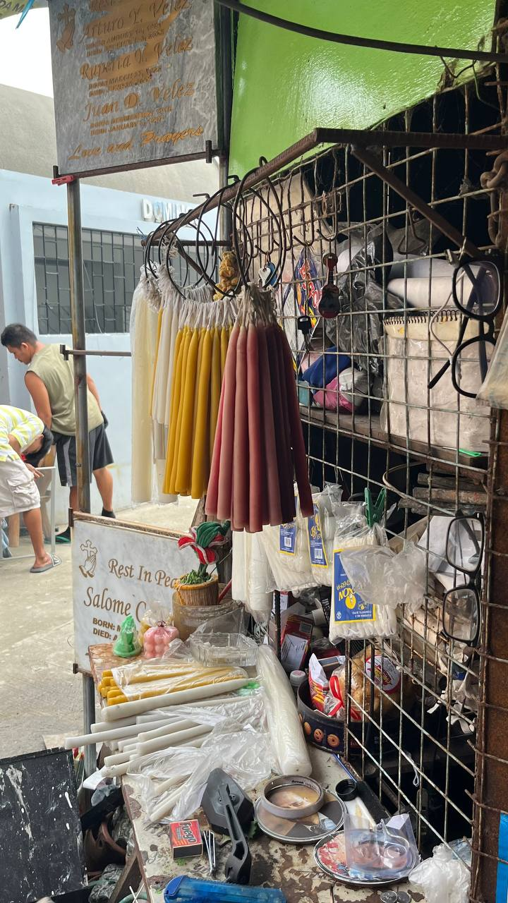
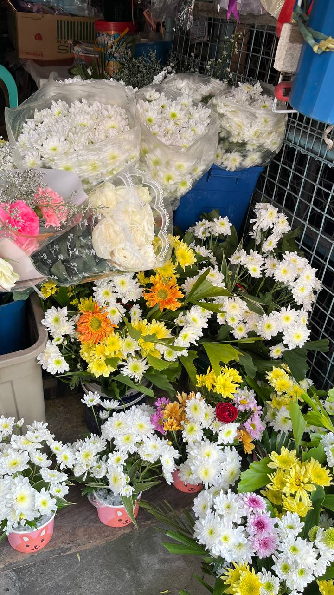
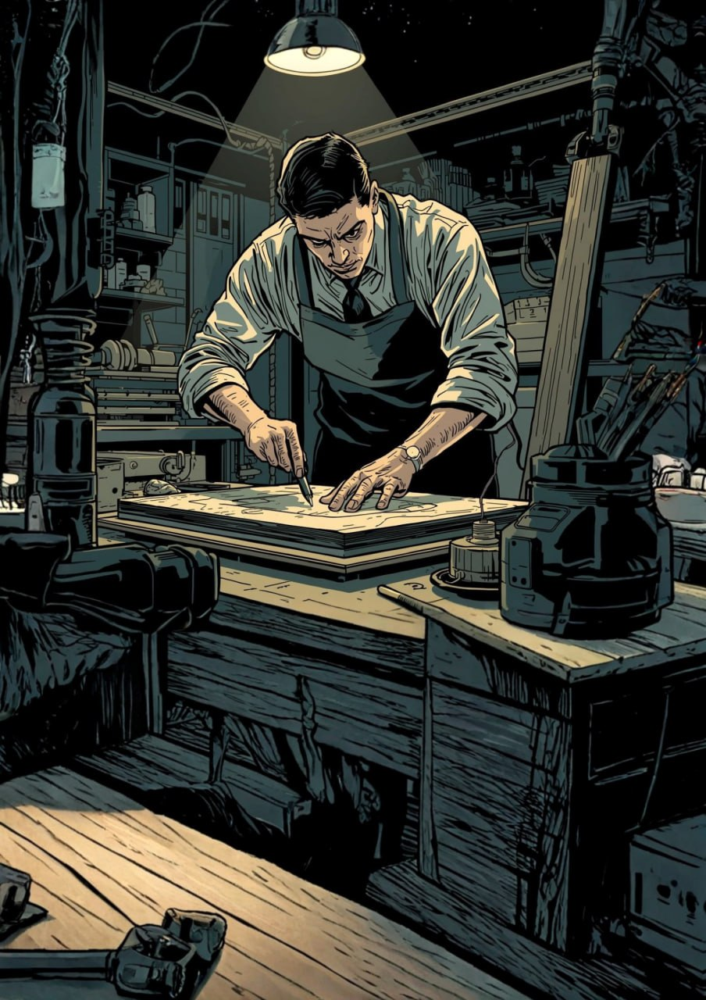
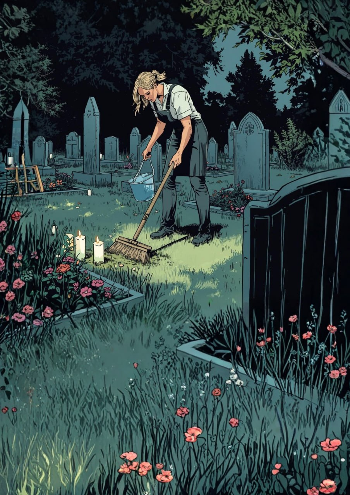

Danas ng nagbebenta ng kandila

Ang mga gumagawa ng kandila sa Daet, Camarines Norte ay nagsimula sa kanilang hanapbuhay sa murang edad, tinuruan ng kanilang magulang at lumaki sa pagmamasid sa proseso ng paggawa. Sa paglipas ng panahon, natutunan nila ang bawat hakbang sa paggawa ng kandila at ngayon ay sila na rin ang nagtuturo sa kanilang mga anak upang maipagpatuloy ang tradisyon. Sa kasalukuyan, ang kanilang mga anak ang katuwang sa paghahanda ng wax, paghulma, pagbalot, at paminsan-minsan ay sa pakikipag-ugnayan sa mga suki. Ipinapakita nito ang kahalagahan ng pagpasa ng kaalaman sa pamilya at ang pagpapatuloy ng tradisyunal na hanapbuhay sa pamamagitan ng pagtutulungan ng henerasyon.
Ang paggawa ng kandila ay malaking tulong sa pang-araw-araw na pamumuhay ng pamilya. Sa panahon ng Mahal na Araw at Undas, tumataas ang kita, habang sa karaniwang araw, sapat na para sa pangangailangan ng pamilya. Ang hamon ng kaunting mamimili o masamang panahon ay hinaharap sa pamamagitan ng pagtitipid at maingat na paggamit ng mga materyales. Ipinapakita nito na ang hanapbuhay sa paggawa ng kandila ay nakasalalay sa kasipagan, maayos na proseso, at disiplina.
Basahin pa →Danas ng nagbebenta ng bulaklak

May iba't ibang pinagmulan ang pagbebenta ng bulaklak ng mga nagtitinda sa Daet, Camarines Norte. May mga nagsimula dahil sa impluwensya ng pamilya, mayroon ding natuto sa pamamagitan ng pagmamasid sa social media, at may ilan na nagsimula nang kusa sa tiyak na edad. Ipinapakita nito na ang hanapbuhay na ito ay maaaring maipasa sa pamilya o matutunan sa iba't ibang paraan sa kasalukuyang panahon.
Malaking tulong sa kanilang pamumuhay ang pagbebenta ng bulaklak, ngunit nag-iiba ang kita depende sa okasyon. Sa mga panahong may selebrasyon tulad ng Mother's Day, Valentine's Day, at Undas, mas mataas ang kita, samantalang humihina ito sa mga karaniwang araw. Para sa ilan, nagsisilbi rin itong libangan at pandagdag sa pang-araw-araw na gastusin tulad ng kuryente at pagkain. Gayunpaman, may mga pagkakataon pa ring nagkukulang ang kita, lalo na kapag may mga bulaklak na nasisira o nalalanta.
Basahin pa →Danas ng gumagawa ng lapida

Ang mga gumagawa ng lapida sa Daet, Camarines Norte ay nagsimula sa kanilang hanapbuhay mula sa pagtulong sa shop o negosyo ng pamilya. Lumaki sila sa paligid ng paggawa ng lapida kaya naging natural sa kanila ang matutunan ang bawat hakbang sa paggawa at pag-aalaga ng produkto. Unti-unti rin nilang natutunan na ang gawain ay maaaring maging pangunahing kabuhayan at oportunidad upang makatulong sa pamilya. Kabilang sa mga katuwang sa trabaho ang mga kapatid at ilang kamag-anak upang mas mapabilis at maayos ang paggawa, lalo na kapag maraming orders.
Ang hanapbuhay na ito ay malaking tulong sa pamumuhay ng mga gumagawa ng lapida sa Daet, Camarines Norte. Sa panahon ng Undas o tuwing mataas ang demand, mas marami ang kliyente kaya mas abala ang paggawa at pagtutok sa detalye ng bawat lapida. Ipinapakita nito na ang paggawa ng lapida ay praktikal, at nakadepende sa kasipagan, maayos na pagpaplano, at dedikasyon sa trabaho.
Basahin pa →Danas ng naglilinis at nag-aalaga ng puntod

Ang mga naglilinis sa sementeryo sa Daet, Camarines Norte ay nagsimula sa kanilang hanapbuhay mula pagkabata. Lumaki sila sa paligid ng sementeryo kaya naging natural sa kanila ang pagtulong sa paglilinis at pag-aayos ng mga puntod. Unti-unti rin nilang natutunan na ang gawain ay maaari ring maging karagdagang kabuhayan para sa pamilya. Kabilang sa mga katuwang sa trabaho ang mga anak at ilang kamag-anak upang mas mapabilis at maayos ang paglilinis at pag-aayos ng sementeryo.
Ang hanapbuhay na ito ay malaking tulong sa pamumuhay ng mga naglilinis sa sementeryo sa Daet dahil mabilis ang kita at maliit lamang ang puhunan. Sa panahon ng Undas, mas marami ang kliyente kaya mas abala ang trabaho. Upang masiguro ang maayos na serbisyo, sinisimulan nila ang paglilinis ng mga puntod isang linggo bago ang Undas. Ipinapakita nito na ang hanapbuhay sa sementeryo ay praktikal na pinagkakakitaan na nakadepende sa kasipagan at tamang pagpaplano.
Basahin pa →Danas ng gumagawa ng ataol o kabaong

Ang mga gumagawa ng kabaong sa Daet, Camarines Norte ay nagsimula sa ganitong hanapbuhay dahil sa agarang pangangailangan ng mga tao na may mahal sa buhay na pumanaw at walang sapat na badyet para sa mamahaling kabaong. Ang ilan ay nagsimula matapos matulungan ang kamag-anak o kapitbahay na namatayan, gamit ang simpleng materyales tulad ng plywood, na kalaunan ay naging regular na gawain kapag may nagpapagawa. Ang kanilang kasanayan ay nag-ugat sa pagiging karpintero at karanasan sa paggawa ng iba pang produktong kahoy, na inangkop sa pagbuo ng kabaong.
Ang paggawa ng kabaong ay nakakatulong bilang dagdag kita sa pamilya lalo na sa mga panahong may biglaang pangangailangan o may namamatay sa komunidad. Dahil hindi ito regular na trabaho, umaasa rin sila sa ibang gawaing karpintero kapag walang order. May ilan na nakararanas ng tahimik o kakaibang pakiramdam sa trabaho lalo na tuwing Undas, ngunit itinuturing nila itong normal at bahagi lamang ng kapaligiran ng kanilang hanapbuhay.
Basahin pa →Danas ng make-up artist ng patay
Ang mga gumagawa ng make-up sa patay sa Daet, Camarines Norte ay nagsimula sa ganitong hanapbuhay matapos silang makilala bilang mga make-up artist sa iba't ibang okasyon tulad ng kasal at debut. Sa paglipas ng panahon, nagkaroon sila ng pagkakataon na maimbitahan at mapakiusapan ng mga pamilya ng yumao upang ayusin ang kanilang mahal sa buhay, na nagbigay sa kanila ng unang karanasan sa ganitong uri ng serbisyo.
Ang ganitong uri ng hanapbuhay ay hindi regular ngunit nakakatulong bilang dagdag kita at karagdagang karanasan sa propesyon bilang make-up artist. Kapag walang ganitong serbisyo, umaasa sila sa regular na kliyente at ibang bookings upang mapanatili ang kita. May mga pagkakataon na nagiging tahimik at mabigat ang pakiramdam sa trabaho, ngunit nananatili ang propesyonalismo at dedikasyon.
Basahin pa →